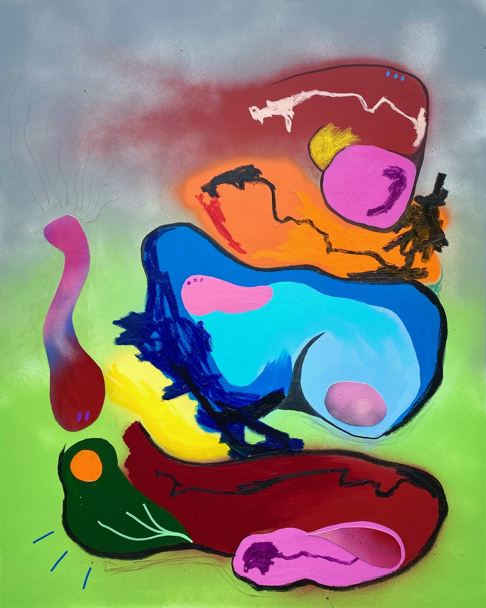

“Choppy seas, weak at the knees and twenty Lambert and Butler please”, 2020. Spray paint, acrylic, oil, oil stick and card on canvas. 120cm x 100cm.
“Are they looking at us?”, 2020. Spray paint, acrylic, oil stick and marker on canvas. 80cm x 100cm.

“Casual hello, drink wine”, 2020. Spray paint, acrylic, oil stick and card on canvas.
“Body pump”, 2020. Spray paint, acrylic, oil stick, marker and card on canvas.

“The wings weren’t crucial”, 2020. Spray paint, acrylic, oil stick, paper and marker on canvas. 80cm x 100cm.